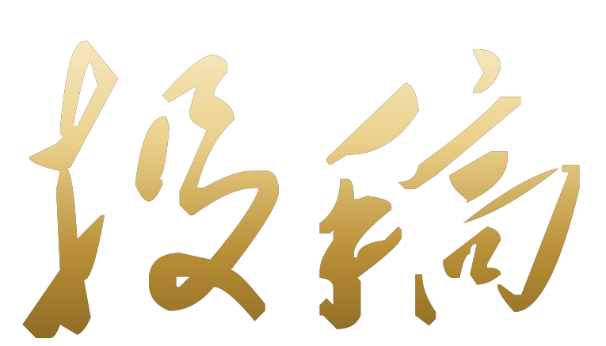

1949—2026
☰
首页
祖国之发展
人民之热情
你我之见证
投稿
SUBMISSION

分享你的国庆照片与故事，让属于你的记忆，汇入时代的洪流。
上传你的国庆记忆
「城市」与「照片」必填，其余选填
01
关于你
怎样称呼你
选填
联系方式
02
关于照片
投稿城市
*
×
从全部 2210 座县级及以上城市中检索
请从下拉列表中选择一个城市
拍摄年份
选填
不填写
2026
2025
2024
2023
2022
2021
2020
2019
2018
更早
照片标题
选填
上传照片
*
最多 3 张，可随时增删
🖼
点击选择照片，或把图片拖到这里
支持 JPG / PNG / WebP · 会自动压缩到 1024px 以内
照片读取失败，请换一张试试
03
关于故事
照片故事
选填 · 1~100 字
0
/ 100
选填，1~100 字
文案请填 1~100 字，或留空不填
提 交 投 稿
数据保存在本机浏览器中，这台电脑上打开《你我之见证》即可看到你的投稿。
✅ 投稿成功！感谢你的分享 —— 你的照片已经进入《你我之见证》。
去见证页看看 →
再投一张